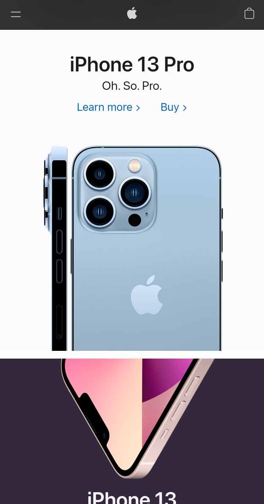
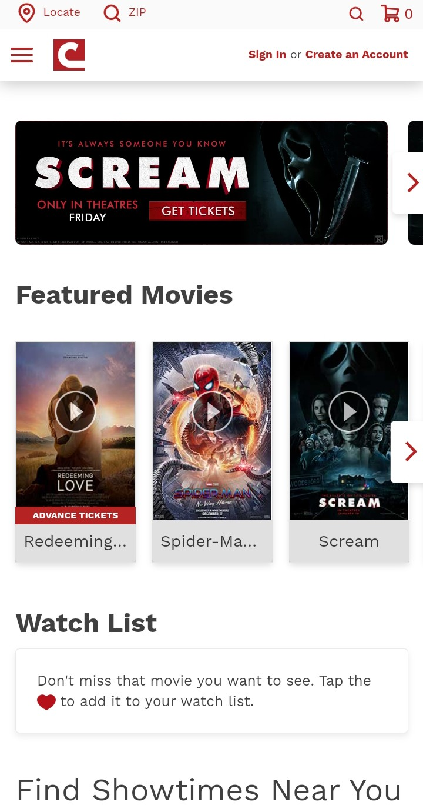

White Space: Apple.com
On Apple's homepage we have a couple pictures of the new iPhone, and that's all that's really shown. There's a lot of white space around the first one which drives the eye to the center of the picture, which is the iPhone. Right underneath is another picture of an iphone with a purple background, and although it isn't technically white I think that it still counts as white because they chose a purple that wouldn't attract attention, and instead sends your attention to the phone in the center. I think the way that they spaced out their text on the page was a good use of white space. It used close to the maximum they could without making it uncomfortable.
Alignment: Bignoise.com
The main example of alignment in this picture is that there are 6 and 2/4 images shown in the Recent Releases, and they are each horizontally and vertically aligned with one another. In addition, the left aligned h2 "Recent Releases" and the "p" element below it both align horizontally with the left side of the pictures.
Hierarchy: Cinemark.com
This screenshot has visually engaging content, and they've set it up in such a way as to draw attention to the things they want to sell, as any reasonable business would. They made the biggest, most noticable thing the next big movie that is/was coming out, followed by other movies they want you to see. They made the rest of the site pretty boring and plain so as to draw your attention to the main focuses stated before.